Digital Electronics
Chapter 2: Logic Gates
Two types of problems everyone facing in life.
Arithmetical – Related to daily transactions.
And Logical related to decisions in life.
Let us take example of Arithmetic and Logic.
1. Arithmetic Example
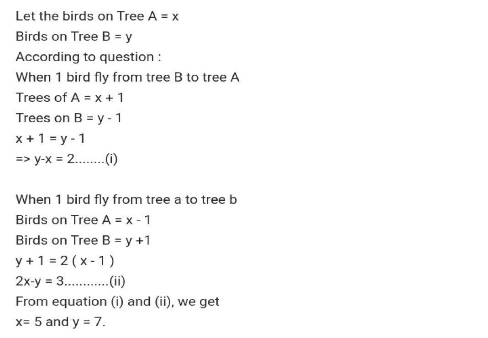
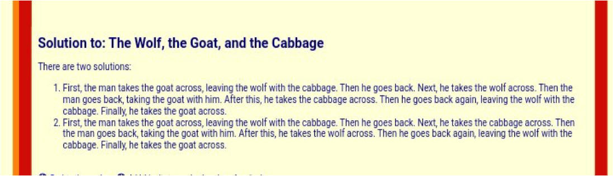
2. Logic Example
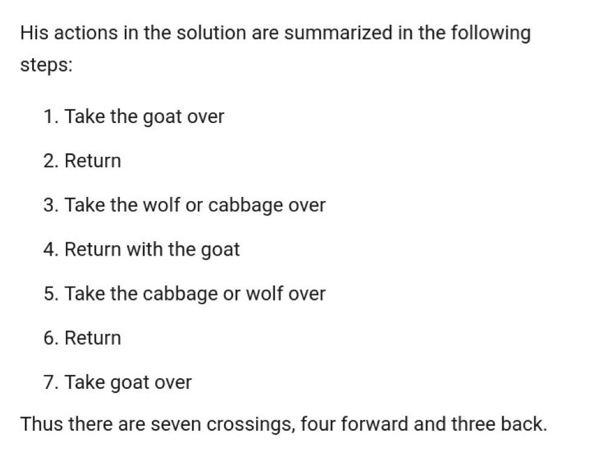
Konrad Zuse designed and built electromechanical logic gates for his computer Z1 (from 1935 to 1938).
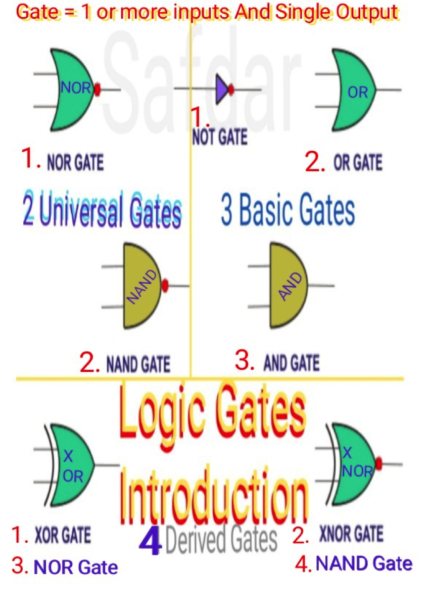
A Digital Logic Gate is an electronic circuit which makes logical decisions based on the combination of digital signals present on its inputs
Logic gates are the basic building blocks of any digital system. It has one or more than one input and only one output. The relationship between the input and the output is based on a certain logic. Based on this, logic gates are named as AND gate, OR gate, NOT gate etc.
Individual logic gates can be connected or cascaded together to form a logic gate function with any desired number of inputs, or to form combinational and sequential type circuits, or to produce different logic gate functions from standard gates.
Standard commercially available 14 pins digital logic gates are available in two basic families or forms, TTL which stands for Transistor-Transistor Logic such as the 7400 series, and CMOS which stands for Complementary Metal-Oxide-Silicon which is the 4000 series of chips. This notation of TTL or CMOS refers to the logic technology used to manufacture the integrated circuit, (IC) or a “chip” as it is more commonly called. Details in next chapter.
Gates are identified by their function: NOT, AND, NAND, OR, NOR, EX-OR and EX-NOR. Capital letters are normally used to make it clear that the term refers to a logic gate.
Note that logic gates are not always required because simple logic functions can be performed with switches or diodes, for example: AND by 2 series switches and OR by 2 parallel switches as shown below.
AND & OR Gates using SPST Switches.
- 1. Switches in series (AND function)
- 2. Switches in parallel (OR function)
Switches in Series
If several on-off switches are connected in series they must all be closed (on) to complete the circuit. The diagram shows a simple circuit with two switches connected in series to control a lamp. Switch S1 AND Switch S2 must be closed to light the lamp.
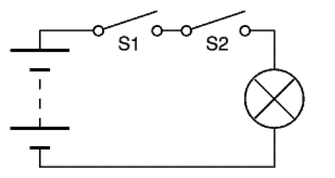
Switches in Parallel
If several on-off switches are connected in parallel only one needs to be closed (on) to complete the circuit.
The diagram shows a simple circuit with two switches connected in parallel to control a lamp.
Switch S1 OR Switch S2 (or both of them) must be closed to light the lamp.
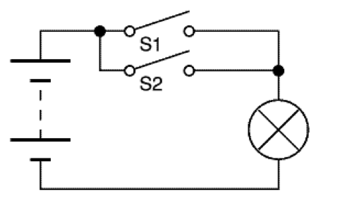
Gates have two or more inputs, except a NOT gate which has only one input.
All gates have only one output.
Usually the letters A, B, C and so on are used to label inputs, and Q or Y is used to label the output. Here the inputs are shown on the left and the output on the right.
Some gate symbols have a circle on their output which means that their function includes inverting of the output. It is equivalent to feeding the output through a NOT gate. For example, the NAND (Not AND) gate symbol shown on the right is the same as an AND gate symbol but with the addition of an inverting circle on the output.
Truth tables
A truth table is a good way to show the function of a logic gate. It shows the output states for every possible combination of input states. The symbols 0 (false) and 1 (true) are usually used in truth tables. 2 inputs format TT is as shown below. A and B are inputs. Q is output.
| Input A | Input B | Output Q XYZ Gates |
|---|
NOT, AND ,OR are called the basic gates because from combination of two or more basic gates we can construct other gates like Derived gates and Universal gates. All digital systems can be constructed by only three basic logic gates.
NOT Gate
A NOT gate can only have one input The output is the inverse of the input.
A NOT gate is
also called an inverter.
The output Q is high when the input A is Low: Q = NOT A
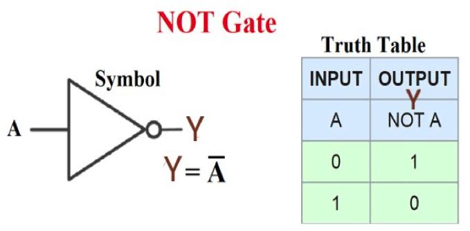
AND gate
An AND gate can have two or more inputs, its output is HIGH(TRUE) if all inputs are HIGH. The output Q is High if input A AND input B are both High: Q = A AND B = A.B.
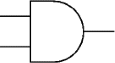
| Input A | Input B | Output Q |
|---|---|---|
| 0 | 0 | 0 |
| 0 | 1 | 0 |
| 1 | 0 | 0 |
| 1 | 1 | 1 |
OR gate
An OR gate can have two or more inputs, its output is High if at least one input is High.
The output Q is High if input A OR input B is High (or both of them are High): Q = A OR B or Both
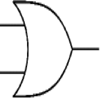
| Input A | Input B | Output Q |
|---|---|---|
| 0 | 0 | 0 |
| 0 | 1 | 1 |
| 1 | 0 | 1 |
| 1 | 1 | 1 |
Universal gates
A universal gate is a gate which can implement any Boolean function without need to use any other gate type. The NAND and NOR gates are universal gates. Using any one Universal gate alone it is possible to construct all the remaining gates.
Further NAND and NOR gates are economical and easier to fabricate and are the most commonly used.
NAND gate.
NAND = Not AND. This is an AND gate with the output inverted, as shown by the bubble 'o' on the symbol output. A NAND gate can have two or more inputs, its output is High if NOT all inputs are High. The output Q is true (High) if input A AND input B are NOT both High: Q = NOT (A AND B).
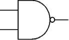
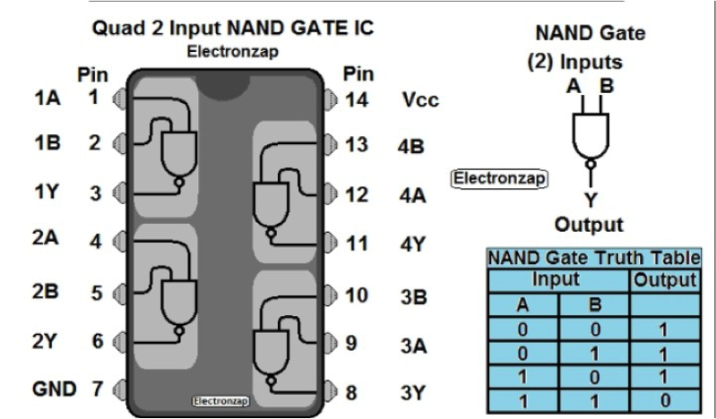
| Input A | Input B | Output Q |
|---|---|---|
| 0 | 0 | 1 |
| 0 | 1 | 1 |
| 1 | 0 | 1 |
| 1 | 1 | 0 |
NOR gate
NOR = Not OR. This is an OR gate with the output inverted, as shown by the ‘o’ on the symbol output. A NOR gate can have two or more inputs, its output is High if no inputs are High. The output Q is High if NOT inputs A OR B are High: Q = NOT (A OR B)
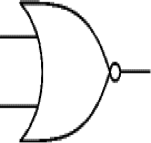
| Input A | Input B | Output Q |
|---|---|---|
| 0 | 0 | 1 |
| 0 | 1 | 0 |
| 1 | 0 | 0 |
| 1 | 1 | 0 |
Note : NAND & NOR are Universal gates and also listed in Derived gates.
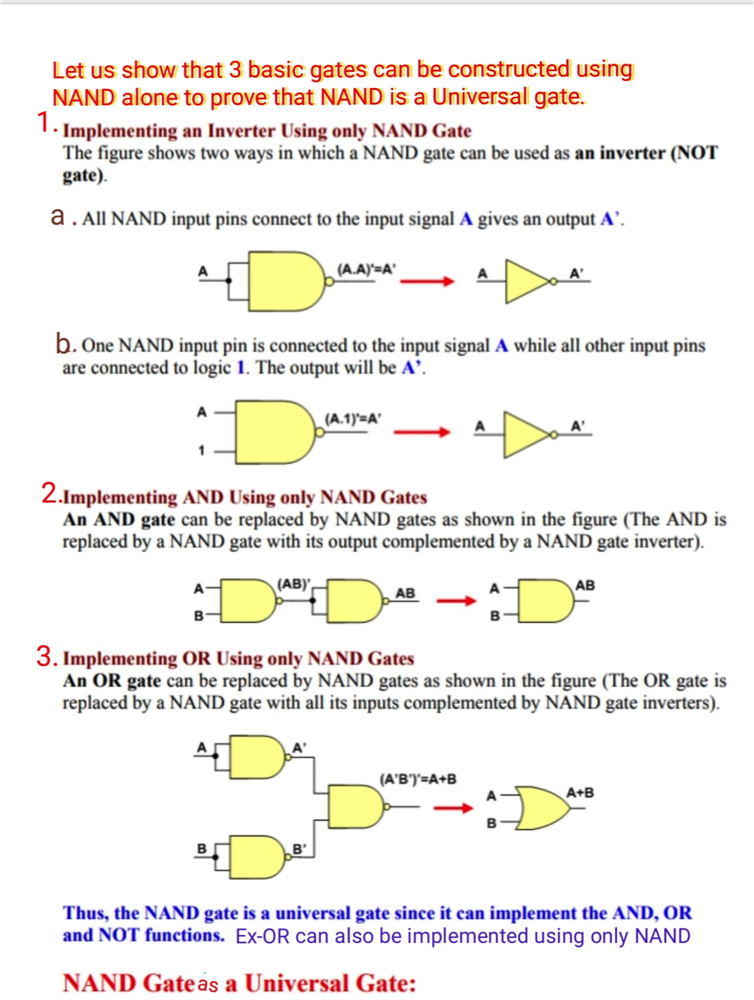
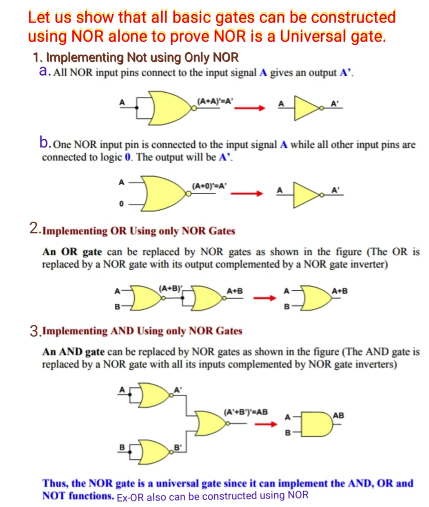
EX-OR gatep
Exclusive-OR. This is like an OR gate but excluding both inputs being High. The output is High if inputs A and B are DIFFERENT. The output Q is High if either input A is High OR input B is High, but not when both of them are High: Q = (A AND NOT B) OR (B AND NOT A)
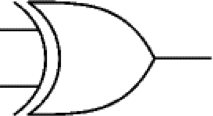
| Input A | Input B | Output Q |
|---|---|---|
| 0 | 0 | 0 |
| 0 | 1 | 1 |
| 1 | 0 | 1 |
| 1 | 1 | 0 |
EX-NOR gate
Exclusive-NOR. This is an EX-OR gate with the output inverted, as shown by the 'o' on the symbol output. The output Q is High if inputs A and B are the SAME (both High or both low): Q = (A AND B) OR (NOT A AND NOT B)
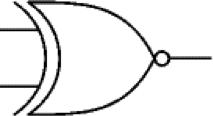
| Input A | Input B | Output Q |
|---|---|---|
| 0 | 0 | 1 |
| 0 | 1 | 0 |
| 1 | 0 | 0 |
| 1 | 1 | 1 |
Summary Of Truth tables of Logic gates.
These summary truth tables below show the output states for 2-input and 3-input gates. These can be helpful if you are trying to select a suitable gate.
Summary for 2-input gates| Input A | Input B | Output AND | Output NAND | Output OR | Output NOR | Output EX-OR | Output EX-NOR |
|---|---|---|---|---|---|---|---|
| 0 | 0 | 0 | 1 | 0 | 1 | 0 | 1 |
| 0 | 1 | 0 | 1 | 1 | 0 | 1 | 0 |
| 1 | 0 | 0 | 1 | 1 | 0 | 1 | 0 |
| 1 | 1 | 1 | 0 | 1 | 0 | 0 | 1 |
| Input A | Input B | Input C | Output AND | Output NAND | Output OR | Output NOR |
|---|---|---|---|---|---|---|
| 0 | 0 | 0 | 0 | 1 | 0 | 1 |
| 0 | 0 | 1 | 1 | 0 | 1 | 0 |
| 0 | 1 | 0 | 0 | 1 | 1 | 0 |
| 0 | 1 | 1 | 0 | 1 | 1 | 0 |
| 1 | 0 | 0 | 0 | 1 | 1 | 0 |
| 1 | 0 | 1 | 0 | 1 | 1 | 0 |
| 1 | 1 | 0 | 0 | 1 | 1 | 0 |
| 1 | 1 | 1 | 1 | 0 | 1 | 0 |
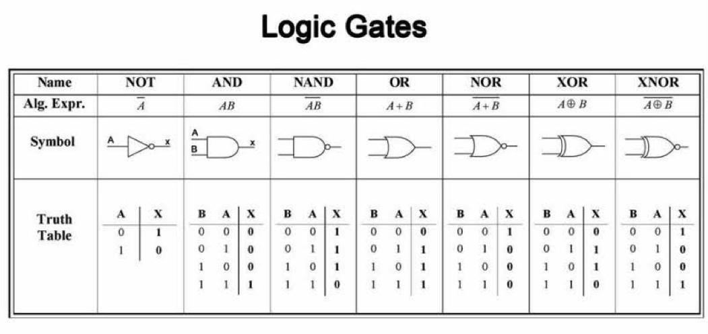
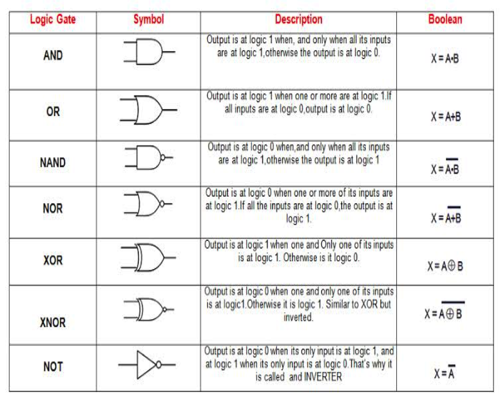
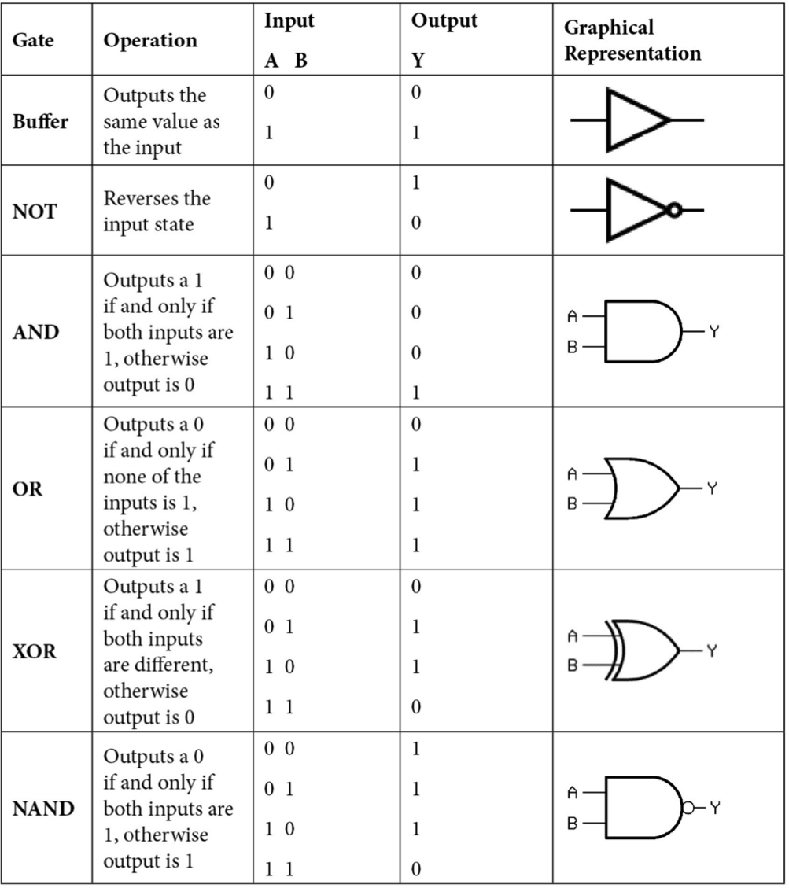
Boolean Algebra uses a set of Laws and Rules to define the operation of a digital logic circuit
As well as the logic symbols “0” and “1” being used to represent a digital input or output, we can also use them as constants for a permanently “Open” or “Closed” circuit or contact respectively.
A set of rules or Laws of Boolean Algebra expressions have been invented to help reduce the number of logic gates needed to perform a particular logic operation resulting in a list of functions or theorems known commonly as the Laws of Boolean Algebra.
Boolean Algebra is the mathematics we use to analyse digital gates and circuits. We can use these “Laws of Boolean” to both reduce and simplify a complex Boolean expression in an attempt to reduce the number of logic gates required. Boolean Algebra is therefore a system of mathematics based on logic that has its own set of rules or laws which are used to define and reduce Boolean expressions.
The variables used in Boolean Algebra only have one of two possible values, a logic “0” and a logic “1” but an expression can have an infinite number of variables all labelled individually to represent inputs to the expression, For example, variables A, B, C etc, giving us a logical expression of A + B = C, but each variable can ONLY be a 0 or a 1.
Examples of these individual laws of Boolean, rules and theorems for Boolean Algebra are given in the following table
The basic Laws of Boolean Algebra that relate to the Commutative Law allowing a change in position for addition and multiplication, the Associative Law allowing the removal of brackets for addition and multiplication, as well as the Distributive Law allowing the factoring of an expression, are the same as in ordinary algebra.
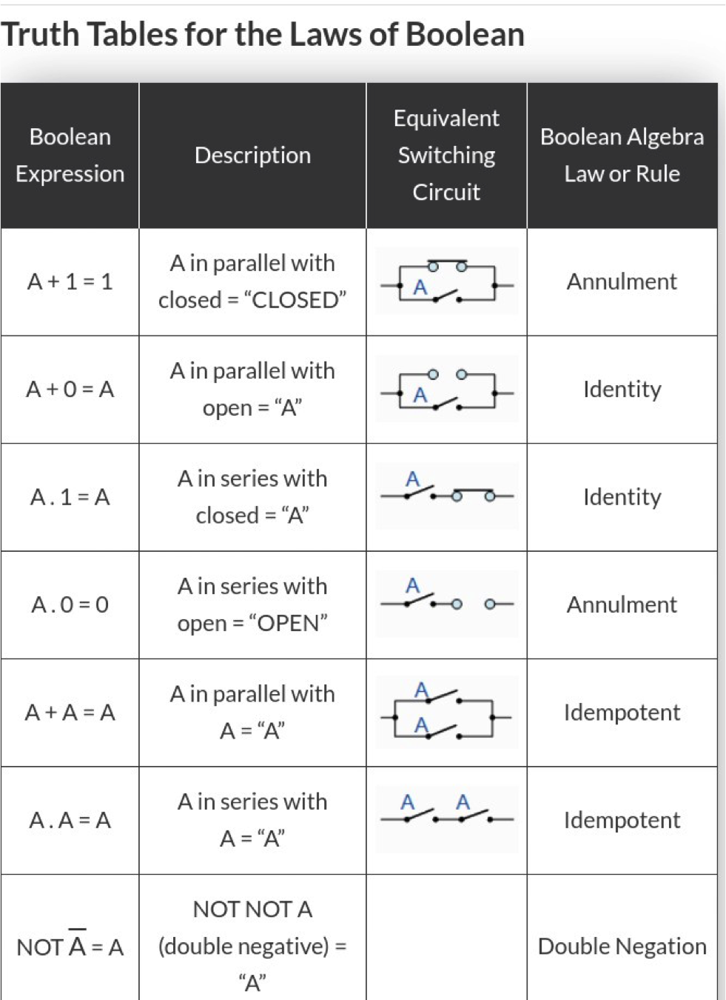
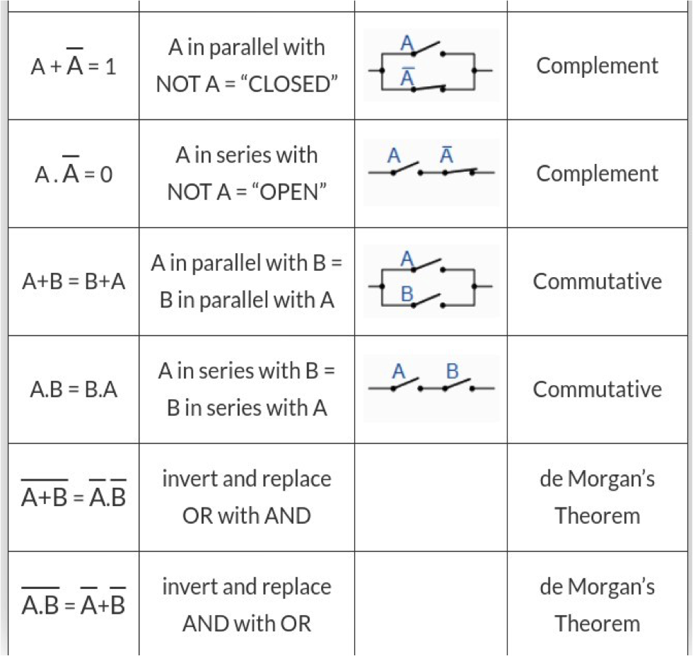
Problems on Boolean Algebra
Example. Using the above laws, simplify the following expression: (A + B)(A + C)=(A + B)(A + C)
A.A + A.C + A.B + B.C ........... – Distributive law
A + A.C + A.B + B.C ........... – Idempotent AND law (A.A = A)
A (1 + C) + A.B + B.C ........... – Distributive law
A.1 + A.B + B.C ........... – Identity OR law (1 + C = 1)
A (1 + B) + B.C ........... – Distributive law
A.1 + B.C ........... – Identity OR law (1 + B = 1)
=A + (B.C) ........... – Identity AND law (A.1 = A)
The expression: (A + B) (A + C) can be simplified to A + (B.C) as in the Distributive law.
DeMorgan´s Theorem used to find the equivalency of the NAND and NOR gates
DeMorgan’s Theorems are 2 sets of laws developed from the Boolean expressions for AND, OR and NOT using two input variables, A and B.
These two theorems allow the input variables to be inverted (NOT) and converted from one form of a Boolean function into an opposite form.
According to DeMorgan’s first theorem NOR (NOT after OR) = Bubbled AND (2 NOT before AND)
And according to second theorem NAND (NOT after AND) = Bubbled OR (2 NOT before OR)
DeMorgan’s Theorem is used
1. To Solve the various Boolean algebra expressions.
2. In digital programming and for making digital circuit diagrams.
3. To define the uniformity between the gate with the same inverted input and output.
4. For implementing the basic gate operation likes NAND gate and NOR gate.
5. Find replacement of NAND and NOR with the combination of Basic Gates. (AND, OR, NOT)
DeMorgan’s First Theorem
According to DeMorgan’s first theorem, a NOR gate is equivalent to a bubbled AND gate. The Boolean expressions for the bubbled AND gate can be expressed by the equation shown below.
For NOR gate, the equation is:
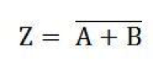
For the bubbled AND gate the equation is:
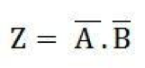
As the NOR and bubbled gates are interchangeable, i.e., both gates have exactly identical outputs for the same set of inputs.
Therefore, the equation can be written as shown below:
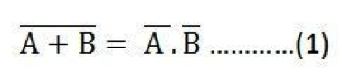
This equation (1) or identity shown above is known as DeMorgan’s Theorem. The symbolic representation of the theorem is shown in the figure below:
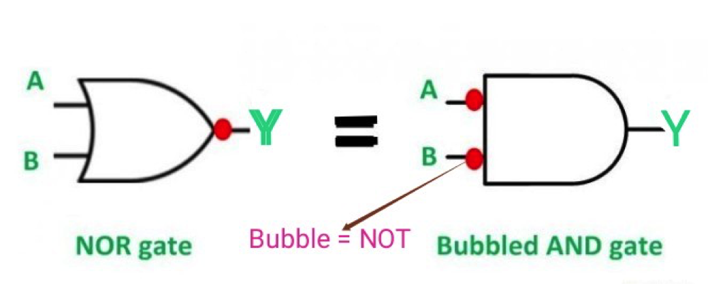
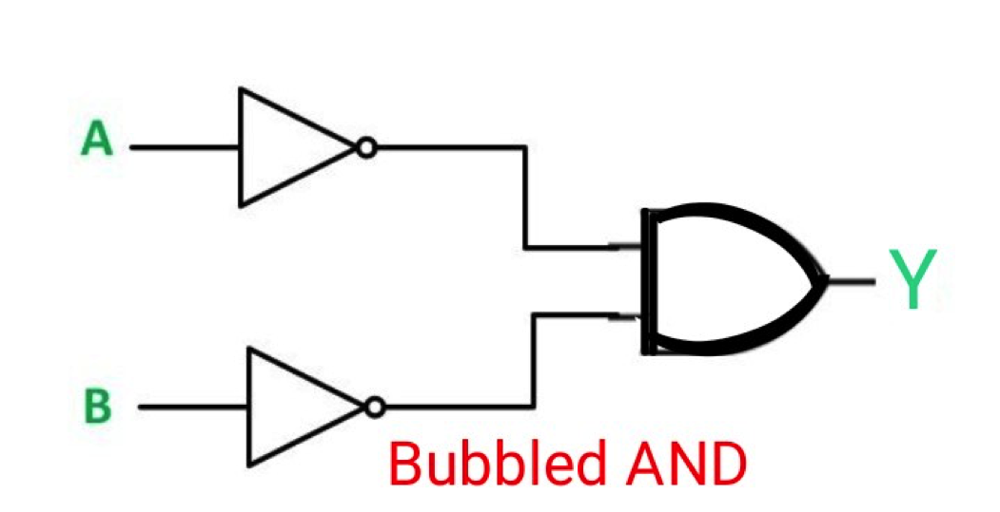
Bubbled AND gate diagram is as follows
Verifying DeMorgan’s first Theorem using Truth Table
| Input A | Input B | A+B | A+B Complement | A bar | B bar | A.B |
|---|---|---|---|---|---|---|
| 0 | 0 | 0 | 1 | 1 | 1 | 1 |
| 0 | 1 | 1 | 0 | 0 | 1 | 0 |
| 1 | 0 | 1 | 0 | 1 | 0 | 0 |
| 1 | 1 | 1 | 0 | 0 | 0 | 0 |
DeMorgan’s Second Theorem
DeMorgan’s Second Theorem states that the NAND gate is equivalent to a bubbled OR gate.
The Boolean expression for the NAND gate is given by the equation shown:
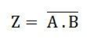
The Boolean expression for the bubbled OR gate is given by the equation:
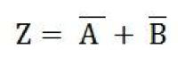
Since NAND and bubbled OR gates are interchangeable, i.e., both gates have identical outputs for the same set of inputs. Therefore, the equations become a
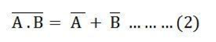
This identity or equation (2) shown above is known as DeMorgan’s Second Theorem.
The symbolic representation of the theorem is shown in the figure below:
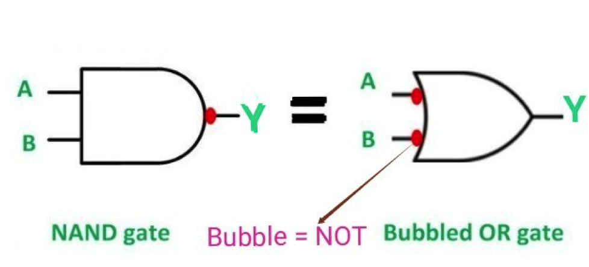
The Bubbled OR Gate
The logic circuit of the bubbled OR gate is shown below:
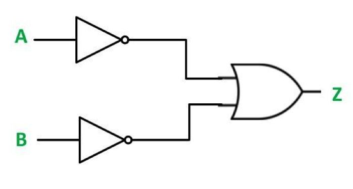
The truth table for the Bubbled OR gate is shown below:
| A | B | Z |
|---|---|---|
| 0 | 0 | 1 |
| 0 | 1 | 1 |
| 1 | 0 | 1 |
| 1 | 1 | 0 |
In this, both the inputs are inverted before they are applied to an OR gate. The output of a bubbled OR gate can be derived from its logic circuit and can be expressed by the equation shown below:
Here are the results when the logic circuit of bubbled OR gate when all the possible sets of inputs are applied such as 00, 01, 10 or 11.
For AB: 00
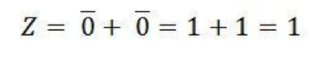
For AB: 01
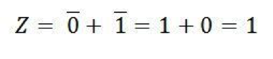
For AB: 10
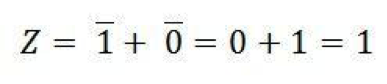
For AB: 11
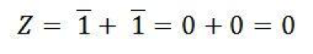
The truth table for the bubbled OR gate is exactly identical to the truth table of a NAND gate. Hence, NAND and bubbled OR gate is interchangeable
Verifying DeMorgan’s Second Theorem using Truth Table
| Input A | Input B | A+B | A+B Complement | A bar | B bar | A.B |
|---|---|---|---|---|---|---|
| 0 | 0 | 0 | 1 | 1 | 1 | 1 |
| 0 | 1 | 0 | 1 | 0 | 1 | 1 |
| 1 | 0 | 0 | 1 | 1 | 0 | 1 |
| 1 | 1 | 1 | 0 | 0 | 0 | 0 |
Half Adder and Full Adder
An adder add minimum two binary numbers.
Half adder can’t add carry
Full adder has provision to add carry.
Half Adder Circuit
Capable of performing simple addition with the help of logic gates.
Let us first take a look at the addition of single bits.
0+0 = 0
0+1 = 1
1+0 = 1
1+1 = 10
Here the output ‘1’of ‘10’ becomes the carry-out. The result is shown in a truth-table below. ‘SUM’ is the normal output and ‘CARRY’ is the carry-out.
| Input A | Input B | Sum | Carry |
|---|---|---|---|
| 0 | 0 | 0 | 0 |
| 0 | 1 | 1 | 0 |
| 1 | 0 | 1 | 0 |
| 1 | 1 | 0 | 1 |
From the equation, it is clear that this 1-bit adder can be easily implemented with the help of EXOR Gate for the output ‘SUM’ and an AND Gate for the carry.
Take a look at the implementation below.
In following circuit, LHS is Half Adder. And RHS is full adder.
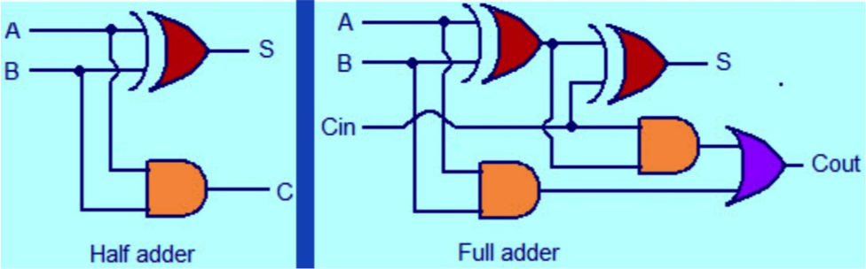
[For complex addition, there may be cases when you have to add two 8-bit bytes together. This can be done only with the help of full-adder logic.]
Full Adder
The main difference between a half-adder and a full-adder is that the full-adder has three inputs and two outputs. The first two inputs are A and B and the third input is an input carry designated as Cin. When a full adder logic is designed we will be able to string eight of them together to create a byte-wide adder and cascade the carry bit from one adder to the next.
The output carry is designated as Cout and the normal output is designated as S. Take a look at the truth-table.
| Input A | Input B | Cin | Cout | S |
|---|---|---|---|---|
| 0 | 0 | 0 | 0 | 0 |
| 0 | 0 | 1 | 0 | 1 |
| 0 | 1 | 0 | 0 | 1 |
| 0 | 1 | 1 | 1 | 0 |
| 1 | 0 | 0 | 0 | 1 |
| 1 | 0 | 1 | 1 | 0 |
| 1 | 1 | 0 | 1 | 0 |
| 1 | 1 | 1 | 1 | 1 |
From the above truth-table, the full adder logic can be implemented.
The output S is an EXOR between the input A and the half-adder SUM output with B and Cin inputs. We must also note that the Cout will only be true if any of the two inputs out of the three are HIGH.
Thus, we can implement a full adder circuit with the help of two half adder circuits. The first half adder will be used to add A and B to produce a partial Sum. The second half adder logic can be used to add Cin to the Sum produced by the first half adder to get the final S output. If any of the half adder logic produces a carry, there will be an output carry. Thus, Cout will be an OR function of the half-adder Carry outputs. Take a look at the implementation of the full adder circuit shown below.
Full Adder Circuit
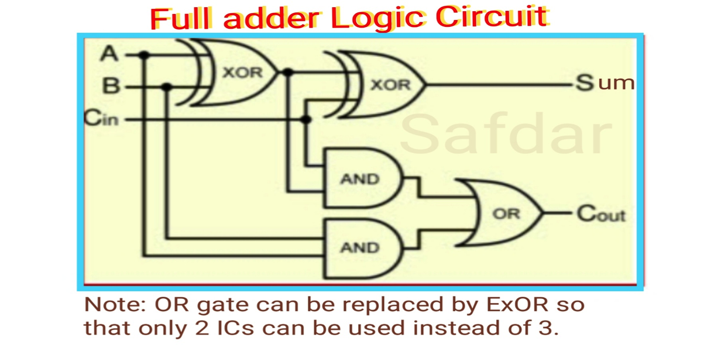
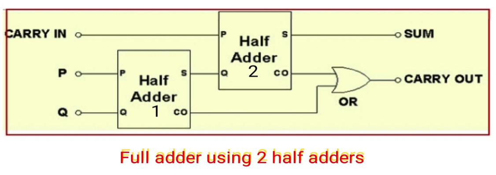
Though the implementation of larger logic diagrams is possible with the above full adder logic a simpler symbol is mostly used to represent the operation. Given below is a simpler schematic representation of a one-bit full adder.
Single-bit Full Adder
With this type of symbol, we can add two bits together taking a carry from the next lower order of magnitude, and sending a carry to the next higher order of magnitude. In a computer, for a multi-bit operation, each bit must be represented by a full adder and must be added simultaneously. Thus, to add two 8-bit numbers, you will need 8 full adders which can be formed by cascading two of the 4-bit blocks. The addition of two 4-bit numbers is shown below.
Multi-Bit Addition using Full Adder.
4 bits binary Adder
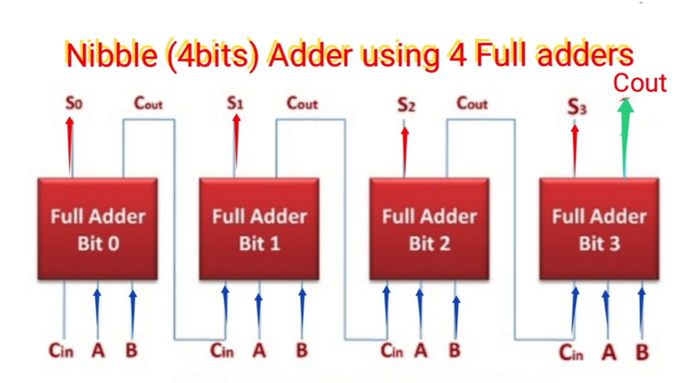
4-bit binary Adder-Subtractor
In Digital Circuits, A Binary Adder-Subtractor is one which is capable of both addition and subtraction of binary numbers in one circuit itself. The operation being performed depends upon the binary value the control signal holds. It is one of the components of the ALU (Arithmetic Logic Unit).
This Circuit Requires prerequisite knowledge of Ex-OR Gate, Binary Addition and Subtraction, Full Adder.
Let’s consider two 4-bit binary numbers A and B as inputs to the Digital Circuit for the operation with digits
A0 A1 A2 A3 for A
B0 B1 B2 B3 for B
The circuit consists of 4 full adders since we are performing operation on 4-bit numbers. There is a control line K that holds a binary value of either 0 or 1 which determines that the operation being carried out is addition or subtraction.
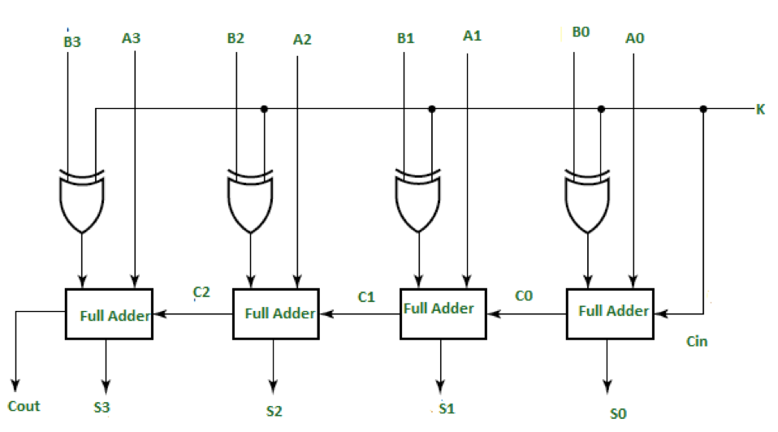
As shown in the figure, the first full adder has control line directly as its input (input carry C0), The input A0 (The least significant bit of A) is directly input in the full adder. The third input is the Ex-OR of B0 and K (S in fig But do not confuse it with Sum-S). The two outputs produced are Sum/Difference (S0) and Carry (C1).
If the value of K (Control line) is 1, the output of B0(Ex-OR) K=B0′(Complement B0). Thus, the operation would be A+(B0′). Now 2’s complement subtraction for two numbers A and B is given by A+B’. This suggests that when K=1, the operation being performed on the four-bit numbers is subtraction.
Similarly, If the Value of K=0, B0 (Ex-OR) K=B0. The operation is A+B which is simple binary addition. This suggests that When K=0, the operation being performed on the four-bit numbers is addition.
Then C0 is serially passed to the second full adder as one of it’s outputs.The sum/difference S0 is recorded as the least significant bit of the sum/difference. A1, A2, A3 are direct inputs to the second, third and fourth full adders. Then the third input is the B1, B2, B3 Ex-ORed with K to the second, third and fourth full adder respectively. The carry C1, C2 are serially passed to the successive full adder as one of the inputs. C3 becomes the total carry to the sum/difference. S1, S2, S3 are recorded to form the result with S0.
For an n-bit binary adder-subtractor, we use n number of full adders.
Comparison Chart
| PARAMETERS | HALF ADDER | FULL ADDER |
|---|---|---|
| Definition | Half Adder is combinational logic circuit which adds two 1-bit digits. | Full Adder is a combinational circuit which adds three 1-bit digits. |
| Carry Addition | Carry generated from previous addition is not added in next step. | Carry generated from previous addition is added in the next step. |
| Hardware components | It consists of one EX-OR gate and one AND gate. | It consists of two EX-OR, two AND gate and one OR gate. |
| Applications | Calculators, computers, digital measuring devices etc. | Calculators, Multiple bit addition, digital processors etc. |
Controlled logic inverter using 1 exclusive OR gate.
From the truth table for the exclusive OR function it can be seen that when there is a low on one input to the exclusive OR gate, the signal on the other input is passed through the circuit and not inverted. When the signal on one input is a high, then the signal on the other is inverted at the output.
EXCLUSIVE OR / NOR TRUTH TABLE
| A | B | EX-OR o/p | EX-NOR o/p |
|---|---|---|---|
| 0 | 0 | 0 | 1 |
| 0 | 1 | 1 | 0 |
| 1 | 0 | 1 | 0 |
| 1 | 1 | 0 | 1 |
As seen from the electronic circuit below, it consists of an exclusive OR gate, a pull up resistor and a switch. The control line could come from an external source such as another gate
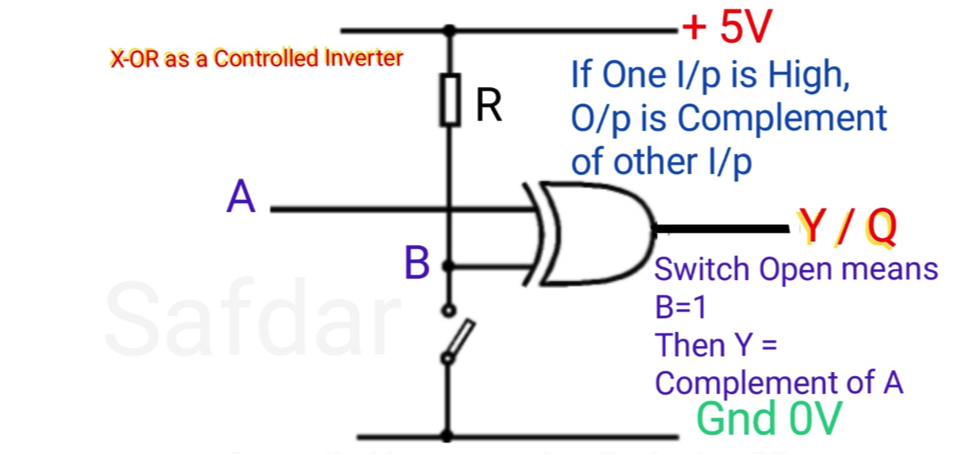
Controlled Inverter using Exclusive OR gate.
Practical point of view….
Pin configuration of Logic Integrated circuits (IC)


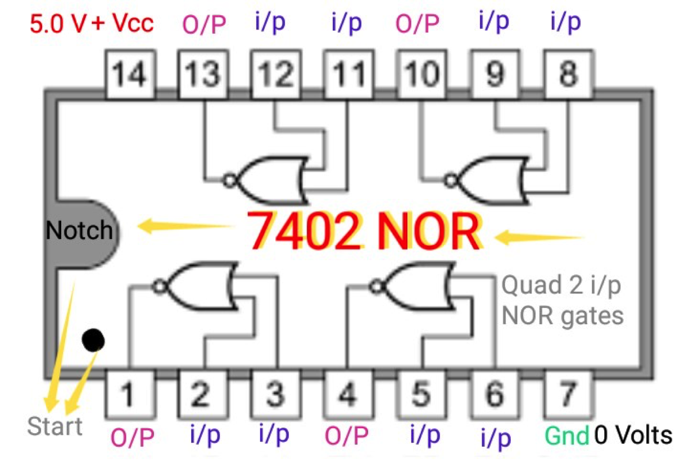
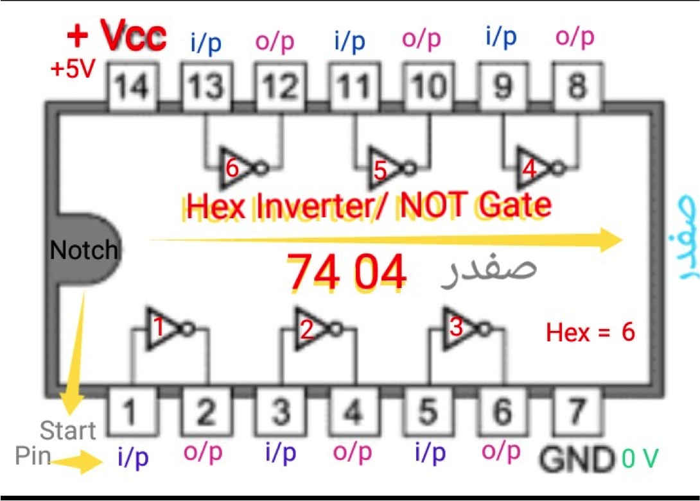
Mnemonics to Remember NAND, NOR, NOT
Pin Congratulations

Arrangement Mnemonics to Remember Pin configuration of ICs
Pin configuration of Logic Integrated circuits (IC) Cont.…
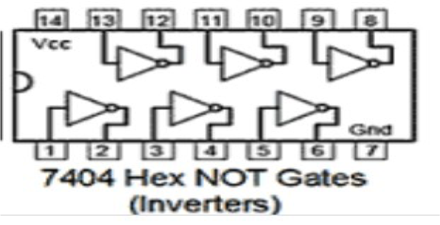
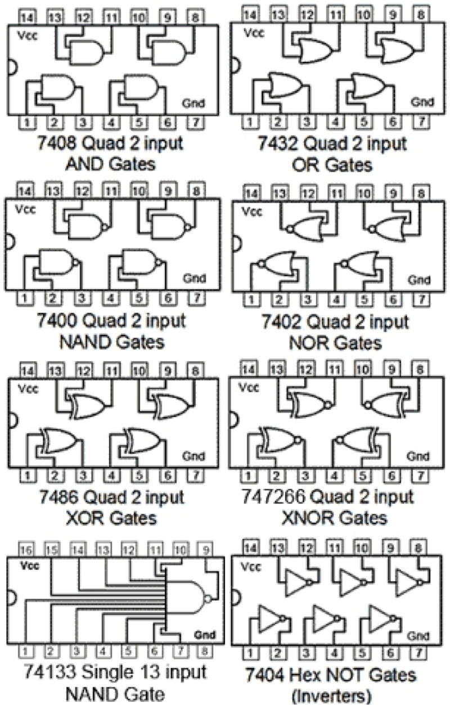
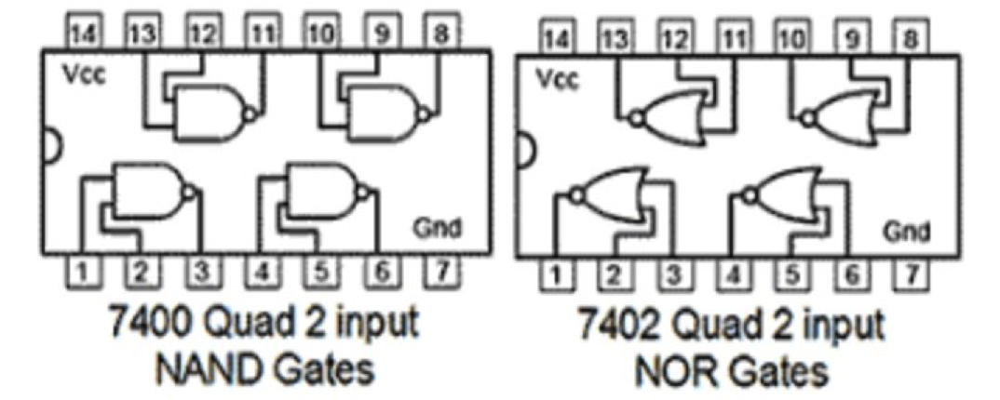
7400 series Main Features / Specifications
Some of the main or highlight features and specifications for the 7400 series logic family are detailed below:
SUMMARY OF 7400 SERIES TTL KEY PARAMETERS
| PARAMETER | SPECIFICATION |
|---|---|
| Supply voltage | Nominal 5V (4.75 - 5.25) |
| Max toggle speed | 25 MHz |
| Propagation delay per gate | Typically, 10 ns |
| Power consumption per gate | 10 mW |
Logic ICs
Logic gates are available on ICs (chips) which usually contain several gates of the same type, for example the 4001 IC contains four 2-input NOR gates. There are several families of logic ICs and they can be split into two groups: the 4000 series and the 74 Series
The 4000 and 74HC families are the best for battery powered projects because they will work with a good range of supply voltages and they use very little power. However, if you are using them to design circuits and investigate logic gates, please remember that all unused inputs MUST be connected to the power supply (either +Vs or 0V), this applies even if that part of the IC is not being used in the circuit!
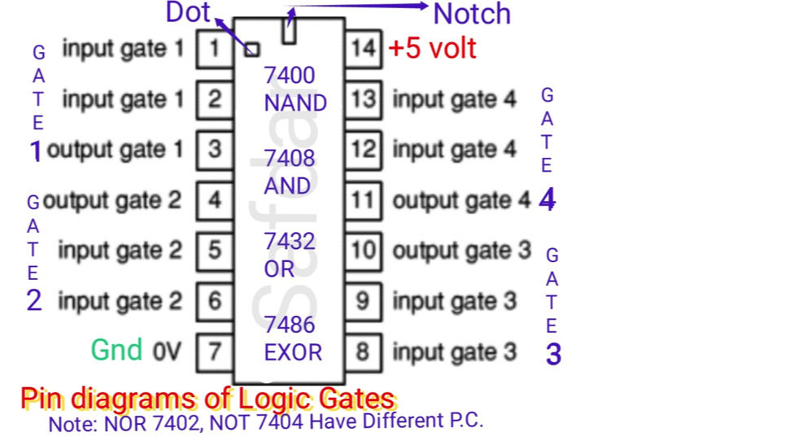
Pin numbers
The pins are numbered anti-clockwise around the IC (chip) starting near the notch or dot. The diagrams show the numbering for 8-pin and 14-pin ICs, but the principle is the same for all sizes.
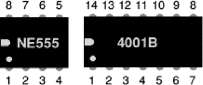
IC holders (DIL Dual in line sockets)
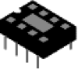
ICs are easily damaged by heat when soldering and their short pins cannot be protected with a heat sink. Instead we use an IC holder, strictly called a DIL socket , which can be safely soldered onto the circuit board. The IC is pushed into the holder when all soldering is complete.
IC holders are only needed when soldering so they are not used on breadboards.
Removing an IC from its holder
If you need to remove an IC it can be gently prised out of the holder with a small flat-blade screwdriver. Carefully lever up each end by inserting the screwdriver blade between the IC and its holder and gently twisting the screwdriver. Take care to start lifting at both ends before you attempt to remove the IC, otherwise you will bend and possibly break the pins. IC remover device are available in market.
Static precautions
Many ICs are static sensitive and can be damaged when you touch them because your body may have become charged with static electricity, from your clothes for example. Static sensitive ICs will be supplied in antistatic packaging with a warning label and they should be left in this packaging until you are ready to use them.
It is usually adequate to earth your hands by touching a metal water pipe or window frame before handling the IC but for the more sensitive (and expensive!) ICs special equipment is available, including earthed wrist straps and earthed work surfaces. You can make an earthed work surface with a sheet of aluminium kitchen foil and using a crocodile clip to connect the foil to a metal water pipe or window frame with a 10k resistor in series.
Antistatic bags for ICs
Digital Logic States
The Digital Logic Gate is the basic building block from which all digital electronic circuits and microprocessor-based systems are constructed from. Basic digital logic gates perform logical operations of AND, OR and NOT on binary numbers.
In digital logic design only two voltage levels or states are allowed and these states are generally referred to as Logic “1” and Logic “0”, or HIGH and LOW, or TRUE and FALSE. These two states are represented in Boolean Algebra and standard truth tables by the binary digits of “1” and “0” respectively.
A good example of a digital state is a simple light switch. The switch can be either “ON” or “OFF”, one state or the other, but not both at the same time. Then we can summarise the relationship between these various digital states as being:
| Boolean Algebra | Boolean Logic | Voltage State |
|---|---|---|
| Logic “1” | TRUE (T) | HIGH (H) |
| Logic “0” | FALSE (F) | LOW (L) |
Most digital logic gates and digital logic systems use “Positive logic”, in which a logic level “0” or “LOW” is represented by a zero voltage, 0v or ground and a logic level “1” or “HIGH” is represented by a higher voltage such as +5 volts, with the switching from one voltage level to the other, from either a logic level “0” to a “1” or a “1” to a “0” being made as quickly as possible to prevent any faulty operation of the logic circuit.
There also exists a complementary “Negative Logic” system in which the values and the rules of a logic “0” and a logic “1” are reversed
Here we shall only refer to the positive logic convention as it is the most commonly used.
In standard TTL (transistor-transistor logic) IC’s there is a pre-defined voltage range for the input and output voltage levels which define exactly what is a logic “1” level and what is a logic “0” level and these are shown below.
TTL Input & Output Voltage Levels
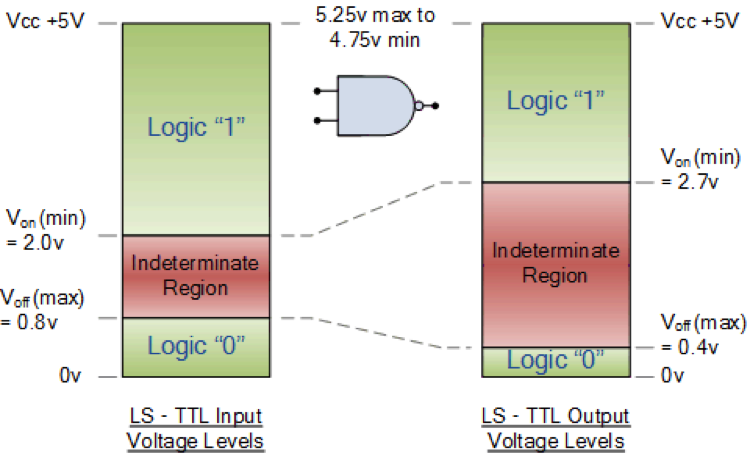
There are a large variety of logic gate types in both the bipolar 7400 and the CMOS 4000 families of digital logic gates such as 74Lxx, 74LSxx, 74ALSxx, 74HCxx, 74HCTxx, 74ACTxx etc., with each one having its own distinct advantages and disadvantages compared to the other. The exact switching voltage required to produce either a logic “0” or a logic “1” depends upon the specific logic group or family.
However, when using a standard +5 volt supply any TTL voltage input between 2.0v and 5v is considered to be a logic “1” or “HIGH” while any voltage input below 0.8v is recognised as a logic “0” or “LOW”. The voltage region in between these two voltage levels either as an input or as an output is called the Indeterminate Region and operating within this region may cause the logic gate to produce a false output.
The CMOS 4000 logic family uses different levels of voltages compared to the TTL types as they are designed using field effect transistors, or FET’s. In CMOS technology a logic “1” level operates between 3.0 and 18 volts and a logic “0” level is below 1.5 volts. Then the following table shows the difference between the logic levels of traditional TTL and CMOS logic gates.
TTL and CMOS Logic Levels
| Device Type | Logic 0 | Logic 1 |
|---|---|---|
| TTL | 0 to 0.8v | 2.0 to 5v (VCC) |
| CMOS | 0 to 1.5v | 3.0 to 18v (VDD) |
Then from the above observations, we can define the ideal TTL digital logic gate as one that has a “LOW” level logic “0” of 0 volts (ground) and a “HIGH” level logic “1” of +5 volts and this can be demonstrated as:
Ideal TTL Digital Logic Gate Voltage Levels
Where the opening or closing of the switch produces either a logic level “1” or a logic level “0” with the resistor R being known as a “pull-up” resistor.
- Question1
- question 2
- question 3